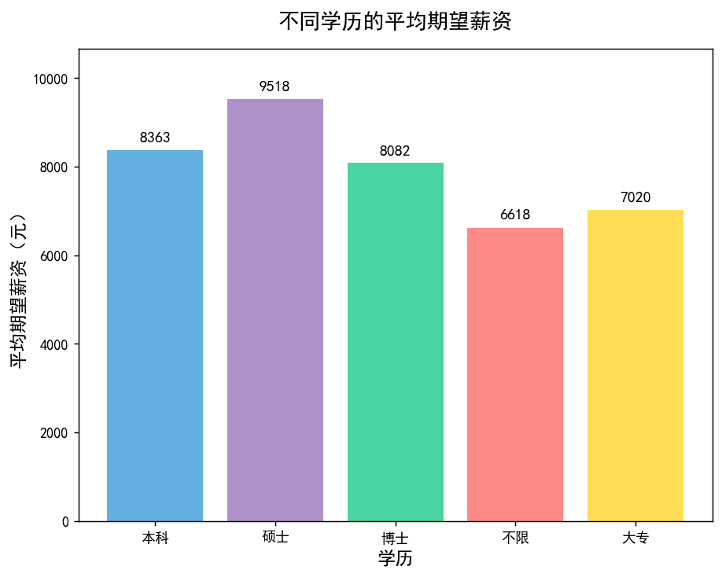
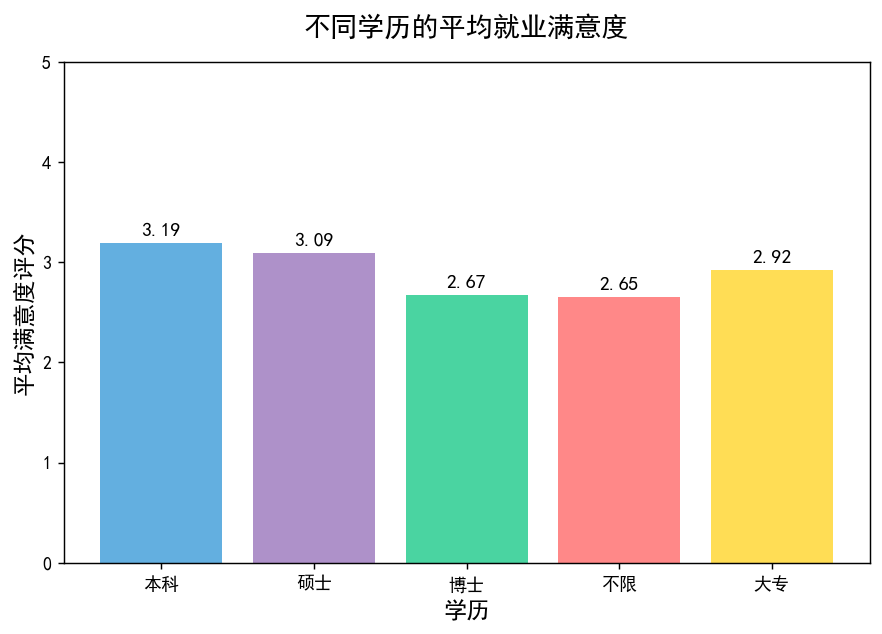
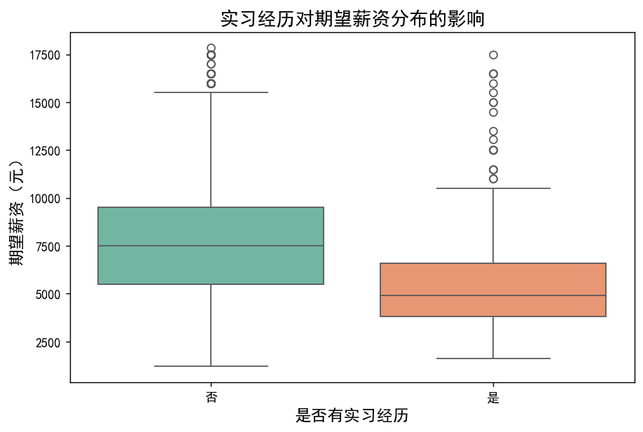
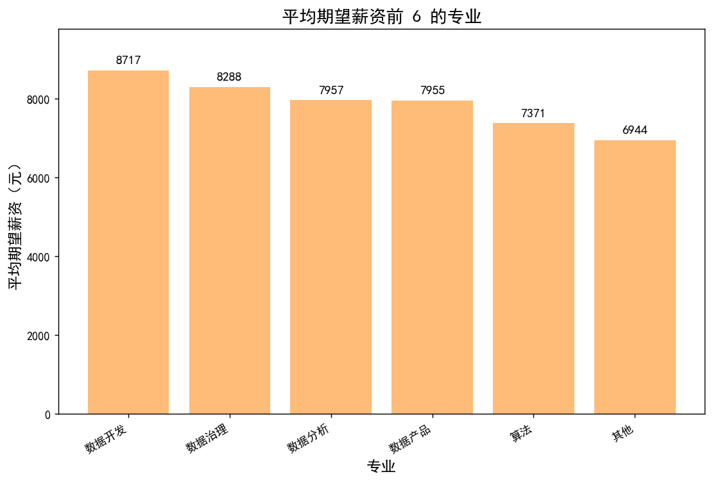
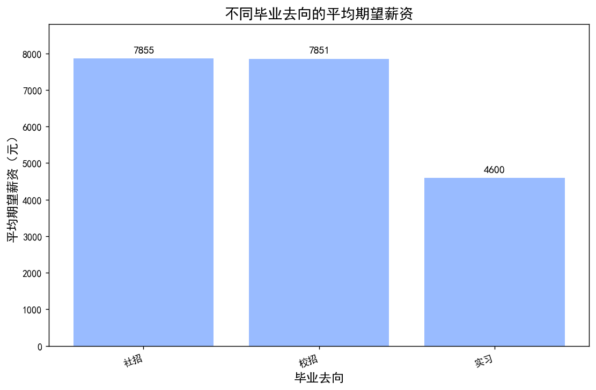
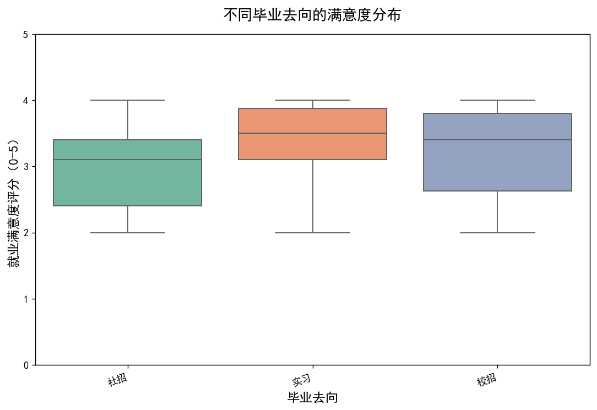
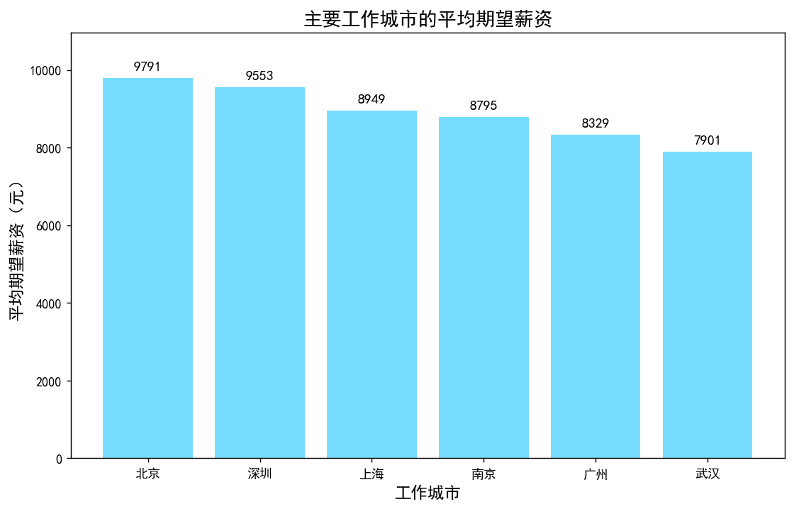
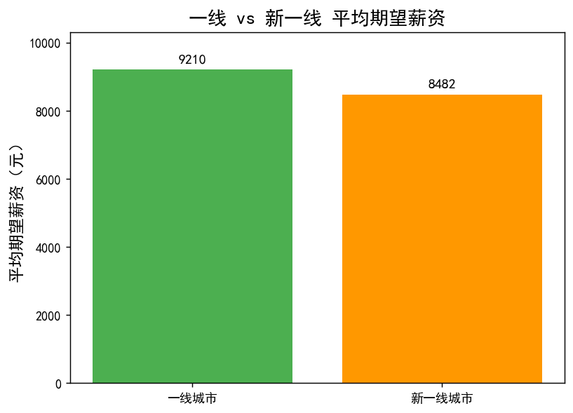
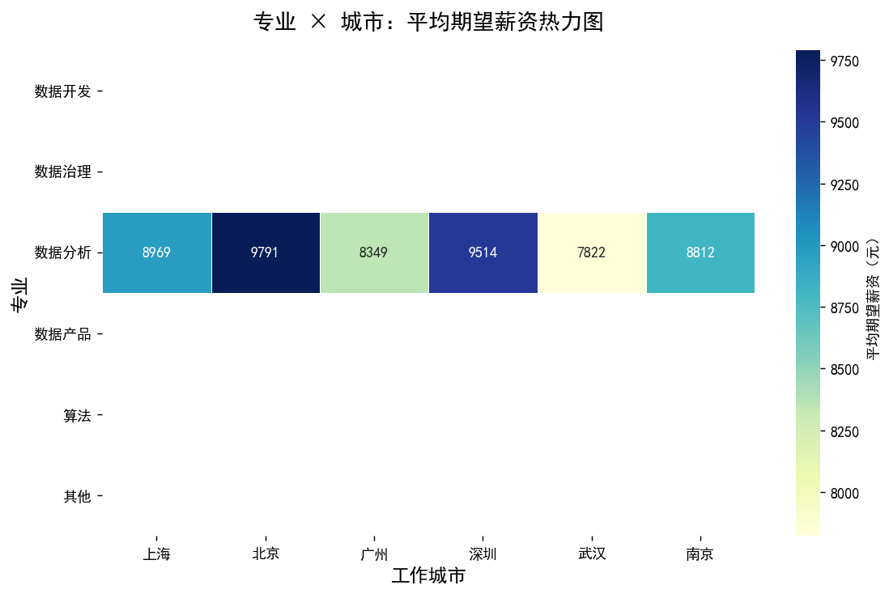

本报告由 main.py 自动生成：下面每一个数字（样本量、均值、差值、95% 置信区间、p 值、效应量、判定）都是本次运行从数据里算出来的。
程序内不含任何预设结论，也不包含任何预测——只对这批样本做描述性测量。
D:\项目\data\raw\boss_岗位数据集.csvea1fbc08c64d判定规则：两组样本量都 ≥ 30 才给结论；在满足样本量的前提下，Holm 校正后的 p < 0.05 记「差异显著」，否则记「差异不显著」。样本不足的对比只报告样本量，不给结论。
同一次运行共 5 组对比，作为一个检验族做 Holm 校正（只做一组对比时，校正 p 等于原始 p）。
| 对比 | A 组（n） | B 组（n） | 均值差 | 95% 置信区间 | p（Welch） | p（Holm 校正） | p（Mann-Whitney） | Cohen's d | 判定 |
|---|---|---|---|---|---|---|---|---|---|
| 学历：博士 vs 本科 | 博士（3） | 本科（850） | -280.8 | [-4436, +3875] | 0.803 | 0.803 | 0.910 | -0.08 | 样本不足（<30），不给结论 |
| 学历：硕士 vs 本科 | 硕士（28） | 本科（850） | 1154.2 | [-106, +2414] | 0.071 | 0.142 | 0.041 | 0.33 | 样本不足（<30），不给结论 |
| 实习：有 vs 无 | 有实习（244） | 无实习（1620） | -2003.0 | [-2422, -1584] | <0.001 | <0.001 | <0.001 | -0.66 | 差异显著 |
| 城市：一线 vs 新一线 | 一线（267） | 新一线（255） | 727.8 | [+80, +1375] | 0.028 | 0.111 | 0.059 | 0.19 | 差异不显著 |
| 专业：数据开发 vs 其他 | 数据开发（19） | 其他（658） | 1773.5 | [+95, +3452] | 0.039 | 0.118 | 0.008 | 0.69 | 样本不足（<30），不给结论 |
均值差 = A 组均值 − B 组均值；置信区间由 Welch–Satterthwaite 自由度算出；Cohen's d 是效应量（0.2 小 / 0.5 中 / 0.8 大）。
显著 ≠ 因果，也不等于总体如此：这里只报告「本样本里两组均值差多大、有多不确定」。
「是否实习」在岗位数据里与岗位类型（实习 / 校招 / 社招）几乎重合：实习岗天然属于实习类型，「非实习」里混着校招与社招。因此「实习 vs 非实习」的差值不能读成「实习经历值多少钱」，它至少混入了岗位类型、经验门槛与公司类型三种差异。
下表把两维拆开：只有当同一岗位类型内部的两格都达到样本量门槛时，才可能谈「实习本身」的差异；其余格子只列数字、不下结论。
| 岗位类型 | 是否实习 | 平均期望薪资 | 人数 |
|---|---|---|---|
| 实习 | 是 | 4599.825 | 150 |
| 校招 | 是 | 7851.063829787234 | 94 |
| 社招 | 否 | 7855.3912037037035 | 1620 |
1. 学历：博士 vs 本科：博士 平均 8082 元（n=3）、本科 平均 8363 元（n=850）；相差 -281 元；两组样本量未同时达到门槛 30 → 样本不足（<30），不给结论。
2. 学历：硕士 vs 本科：硕士 平均 9518 元（n=28）、本科 平均 8363 元（n=850）；相差 +1154 元；两组样本量未同时达到门槛 30 → 样本不足（<30），不给结论。
3. 实习：有 vs 无：有实习 平均 5852 元（n=244）、无实习 平均 7855 元（n=1620）；相差 -2003 元，（95% 置信区间 [-2422, -1584]；Welch t 检验 p=<0.001；Mann-Whitney U 检验 p=<0.001；Cohen's d=-0.66，中效应）；→ 差异显著：在本样本中差异显著（显著 ≠ 因果，也不代表总体一定如此）。（注意：这批数据里「是否实习」与岗位类型高度重合，该差值不可解释为实习经历带来的影响，分层见第 3.1 节）
4. 城市：一线 vs 新一线：一线 平均 9210 元（n=267）、新一线 平均 8482 元（n=255）；相差 +728 元，（95% 置信区间 [+80, +1375]；Welch t 检验 p=0.028；Mann-Whitney U 检验 p=0.059；Cohen's d=0.19，可忽略效应）；→ 差异不显著：本样本不支持「两组有差异」的判断。
5. 专业：数据开发 vs 其他：数据开发 平均 8717 元（n=19）、其他 平均 6944 元（n=658）；相差 +1773 元；两组样本量未同时达到门槛 30 → 样本不足（<30），不给结论。
6. 专业维度：在样本量达标的专业中，平均期望薪资从高到低为 数据分析（7957 元，n=1116）、算法（7371 元，n=50）、其他（6944 元，n=658）（共 3 个达标，此处列出前 3 个）。
7. 毕业去向：样本量达标的去向里，平均期望薪资最高的是「社招」（7855 元），最低的是「实习」（4600 元）。
8. 专业 × 城市：在「薪资前 6 专业 × 主要城市」中，只有样本量 ≥ 30 的组合参与比较（其余在表中为空白）；平均期望薪资最高的是「数据分析 @ 北京」（9791 元，n=68），最低的是「数据分析 @ 武汉」（7822 元，n=34）。
9. 整体概况：有效样本 1864 条，平均期望薪资 7593 元（95% 置信区间 [7452, 7734]，中位数 7000 元），平均吸引力代理分（proxy） 2.99 / 5，有实习经历者占比 13.1%。
10. 城市排序的稳健性：换一组权重后，TOP1 城市在 2/6 个权重场景里发生变化——排序对权重是敏感的，不是数据唯一决定的；各场景与默认排序的 Spearman 秩相关在 0.58 ~ 1.00 之间。
11. 数据质量提示：体检有 1 项需要留意——缺失率最高的列。这只说明「这批数据在这些维度上区分不出来」，不代表现实世界如此。
12. 缺失最多的一列：publish_date 缺失 100.00%（共 32 列存在缺失，逐列见第七节）；缺失会削弱对应维度的可比性，但不会改变已给出的均值与判定。
13. 样本缺口：3/4 个维度还有未达标分组，缺口最大的是「major」（3/6 组达标，还差 50 条才能把全部组补到门槛 30）；明细见第 4.1 节——「缺样本就不给结论」本身就是结论的一部分。
缺口条数 = 把该维度所有未达标组补到门槛 30 条所需的总条数；它只说明「要补多少」，不代表补完就有差异。
| 维度 | 组数 | 达标组数 | 未达标组数 | 缺口条数 |
|---|---|---|---|---|
| major | 6 | 3 | 3 | 50 |
| city | 47 | 29 | 18 | 40 |
| education | 5 | 3 | 2 | 29 |
| direction | 3 | 3 | 0 | 0 |
| 学历 | 平均期望薪资 | 人数 | 平均吸引力代理分（proxy） |
|---|---|---|---|
| 本科 | 8363.34 | 850 | 3.19 |
| 硕士 | 9517.54 | 28 | 3.09 |
| 博士 | 8082.5 | 3 | 2.67 |
| 不限 | 6617.81 | 365 | 2.65 |
| 大专 | 7020.44 | 618 | 2.92 |
| 是否有实习经历 | 平均期望薪资 | 人数 |
|---|---|---|
| 否 | 7855.39 | 1620 |
| 是 | 5852.35 | 244 |
| 专业 | 平均期望薪资 | 人数 |
|---|---|---|
| 数据开发 | 8717.43 | 19 |
| 数据治理 | 8287.5 | 10 |
| 数据分析 | 7956.99 | 1116 |
| 数据产品 | 7954.55 | 11 |
| 算法 | 7371.32 | 50 |
| 其他 | 6943.98 | 658 |
| 毕业去向 | 平均期望薪资 | 人数 | 平均满意度 | 满意度中位数 | 满意度标准差 |
|---|---|---|---|---|---|
| 社招 | 7855.39 | 1620 | 2.94 | 3.1 | 0.64 |
| 校招 | 7851.06 | 94 | 3.19 | 3.4 | 0.69 |
| 实习 | 4599.82 | 150 | 3.43 | 3.5 | 0.57 |
| 工作城市 | 平均期望薪资 | 人数 |
|---|---|---|
| 北京 | 9790.64 | 68 |
| 深圳 | 9553.12 | 75 |
| 上海 | 8948.57 | 71 |
| 南京 | 8795.08 | 48 |
| 广州 | 8329.13 | 53 |
| 武汉 | 7900.96 | 51 |
| 专业 | 上海 | 北京 | 广州 | 深圳 | 武汉 | 南京 |
|---|---|---|---|---|---|---|
| 数据开发 | ||||||
| 数据治理 | ||||||
| 数据分析 | 8969.27 | 9790.64 | 8348.88 | 9513.86 | 7822.02 | 8811.89 |
| 数据产品 | ||||||
| 算法 | ||||||
| 其他 |
空白表示该组合「无样本」或「样本量低于 30」——小样本均值不作为结果展示（不是 0 元）。
| 专业 | 上海 | 北京 | 广州 | 深圳 | 武汉 | 南京 |
|---|---|---|---|---|---|---|
| 数据开发 | ||||||
| 数据治理 | ||||||
| 数据分析 | 70.0 | 68.0 | 50.0 | 71.0 | 34.0 | 39.0 |
| 数据产品 | 1.0 | 1.0 | ||||
| 算法 | 3.0 | |||||
| 其他 | 1.0 | 3.0 | 3.0 | 13.0 | 9.0 |
| 一线平均 | 新一线平均 | 一线样本数 | 新一线样本数 |
|---|---|---|---|
| 9209.89 | 8482.05 | 267 | 255 |
查询条件（由数据自动选取，不是预设）：专业=数据分析，学历=本科，实习=否，期望薪资=不限。
| 权重场景 | TOP1 城市 | 与默认排序的秩相关 | TOP1 是否一致 |
|---|---|---|---|
| 默认 0.5 / 0.3 / 0.2 | 北京 | 1.0 | 一致 |
| 只看就业机会 | 上海 | 0.927 | 不一致 |
| 只看满意度 | 东莞 | 0.582 | 不一致 |
| 只看薪资 | 北京 | 0.747 | 一致 |
| 三者均等 | 北京 | 0.989 | 一致 |
| 与默认相反 0.2 / 0.3 / 0.5 | 北京 | 0.949 | 一致 |
每一行的排序都是当次现算的；秩相关为 Spearman 相关系数，越接近 1 说明排序越不受权重影响。
城市列里的「无 / 未填」等占位值不是城市，已从排序中排除（见 src/config.py::CITY_UNSPECIFIED）。
下面每张卡都由上面的统计表机械推出：换一批数据重跑，结论就会跟着变。强度按样本量、效应量与稳健性判定；标「弱」的不要直接当决策依据。每条卡都带「证据」与「出处」，可顺着出处核对原始数字。
| 卡片 | 发现 | 建议 | 强度 | 证据 | 出处 |
|---|---|---|---|---|---|
| 投递方向优先级 | 「数据分析」P50 7500 元、样本 1116 条；整体 P50 7000 元 | 主攻「数据分析」方向，次选「算法」（P50 6980 元） | 中 | 数据分析 n=1116；P50=7500；整体 P50=7000 | ads_group_stats(dimension=major)；报告 5.3 专业薪资 |
| 投递城市优先级 | 机会指数最高的是「深圳」（n=75、P50 9500 元、指数 0.075） | 首投「深圳」，备选「杭州」 | 弱 | 机会指数 = 样本占比 × (P50 / 整体 P50)；深圳 指数 0.075 | ads_group_stats(dimension=city)；报告 5.5 城市对比 |
| 一线 vs 新一线 | 均值差 +728 元（n=267/255），Holm p=0.111，d=+0.19；判定：差异不显著 | 校正后不显著 → 按生活成本与岗位匹配度选，不要为「一线」额外加价 | 弱 | 均值差 +728；Holm p=0.111；d=+0.19 | ads_comparisons(city_tier1_vs_new_tier1)；报告 3. 对比与显著性检验 |
| 学历投入的边际回报 | P50 最高「本科」8000 元（n=850），次高「大专」6500 元，差 +1500 元 | 高学历组样本不足或未达标 → 先补样本再谈学历回报 | 弱 | 档位差 +1500；最高档 n=850 | ads_group_stats(dimension=education)；ads_comparisons(edu_*) |
| 实习岗值不值得优先 | 按岗位类型分层后，没有「同类岗位里同时有实习与非实习」的可比组合 | 先把样本按岗位类型补齐（同类岗位各抓到实习与非实习），再判断实习是否值得优先 | 弱 | 分层组合 3 行，可比组合 0 | results.intern_by_job_type；报告 5.x 分层表 |
| 城市结论的稳健性 | 6 组权重场景中，TOP1 变化 2 次 | 2/6 组权重下 TOP1 会变 → 城市结论只能说「量级可信、排序需谨慎」 | 弱 | 变化 2/6 | results.recommend_sensitivity；报告 5.9 权重敏感性 |
| 这批结论能下到什么程度 | 23 个分组样本不足 30；数据质量体检有 1 项提示；方向归类覆盖率 66.0% 低于阈值 | 按「先补样本、再看结论」的顺序行动：上面带「弱」的卡片先别当决策依据 | 弱 | 不足分组 23/61；体检提示 1 项；归类覆盖率 66.0%；薪资可解析 99.9% | results.quality；results.group_stats；数据集旁注 meta |
卡片生成规则见 README「行动建议是怎么来的」一节；程序内不写死任何建议文案里的数字。









在给结论之前，先检查这批数据本身是否站得住：缺失、重复、取值集中度，以及「这个维度到底有没有区分度」。全部现算，不含任何预设判断。
| 列 | 缺失率（%） |
|---|---|
| publish_date | 100.0 |
| jd_text | 99.84 |
| skills | 47.48 |
| finance_stage | 26.56 |
| welfare | 21.78 |
| business_district | 13.04 |
| city_district | 12.98 |
| experience_required | 8.15 |
| salary_upper | 0.11 |
| salary_lower | 0.11 |
| salary_band_ratio | 0.11 |
| 学历 | 0.0 |
| 是否有实习经历 | 0.0 |
| 毕业去向 | 0.0 |
| 期望薪资 | 0.0 |
| 专业 | 0.0 |
| company_size_rank | 0.0 |
| experience_rank | 0.0 |
| company_size | 0.0 |
| industry | 0.0 |
| job_title | 0.0 |
| company | 0.0 |
| 工作城市 | 0.0 |
| job_id | 0.0 |
| 满意度评分 | 0.0 |
| salary_unit | 0.0 |
| job_type | 0.0 |
| salary_months | 0.0 |
| jd_len | 0.0 |
| detail_status | 0.0 |
| source | 0.0 |
| crawled_at | 0.0 |
| 检查项 | 本次实测 | 判定 |
|---|---|---|
| 完全重复的行 | 0 行（占 0.00%） | 无重复 |
| 缺失率最高的列 | publish_date：100.00%（1864 条） | 提示：缺失率偏高 |
| 学历 取值集中度 | 取值 5 个｜最大占比 45.6%（本科） | 分布正常 |
| 专业 取值集中度 | 取值 6 个｜最大占比 59.9%（数据分析） | 分布正常 |
| 是否有实习经历 取值集中度 | 取值 2 个｜最大占比 86.9%（否） | 分布正常 |
| 毕业去向 取值集中度 | 取值 3 个｜最大占比 86.9%（社招） | 分布正常 |
| 工作城市 取值集中度 | 取值 47 个｜最大占比 4.3%（成都） | 分布正常 |
| 学历 → 期望薪资 | 5 组｜ANOVA p=6.47e-26｜eta²=0.065（解释力 6.5%） | 有区分度 |
| 学历 → 满意度评分 | 5 组｜ANOVA p=7.27e-43｜eta²=0.104（解释力 10.4%） | 有区分度 |
| 专业 → 期望薪资 | 6 组｜ANOVA p=3.37e-09｜eta²=0.026（解释力 2.6%） | 有区分度 |
| 专业 → 满意度评分 | 6 组｜ANOVA p=4.01e-10｜eta²=0.028（解释力 2.8%） | 有区分度 |
| 是否有实习经历 → 期望薪资 | 2 组｜ANOVA p=1.82e-21｜eta²=0.047（解释力 4.7%） | 有区分度 |
| 是否有实习经历 → 满意度评分 | 2 组｜ANOVA p=1.15e-19｜eta²=0.043（解释力 4.3%） | 有区分度 |
| 毕业去向 → 期望薪资 | 3 组｜ANOVA p=4.19e-35｜eta²=0.082（解释力 8.2%） | 有区分度 |
| 毕业去向 → 满意度评分 | 3 组｜ANOVA p=2.35e-20｜eta²=0.047（解释力 4.7%） | 有区分度 |
| 工作城市 → 期望薪资 | 47 组｜ANOVA p=4.86e-30｜eta²=0.128（解释力 12.8%） | 有区分度 |
| 工作城市 → 满意度评分 | 47 组｜ANOVA p=2.73e-31｜eta²=0.131（解释力 13.1%） | 有区分度 |
| 期望薪资分布形态 | 偏度 0.88｜峰度 0.57｜均值/中位数 1.08 | 近似对称 |
| 期望薪资高值占比 | 4.3% 的样本 > 2×中位数（14000 元） | 无明显聚集 |
| 满意度取值分布 | 取值 20 个｜最常见 2.0（占 18.9%）｜标准差 0.65 | 分布正常 |
判定阈值：组间解释力 eta² < 0.01 记「几乎不解释差异」；缺失率 > 10% 记「偏高」；单一取值占比 ≥ 90% 记「过度集中」。
eta² = 组间平方和 / 总平方和（单因素 ANOVA）：0 = 该维度完全不能区分，1 = 完全区分。
体检只报现象：不解释原因，也不预测。
数据清洗
统计方法
多重比较
数据质量体检
不做预测
局限
---
本文件由程序生成（output/report.md）。同一份数据文件 + 同一组参数重跑 python main.py，可复现同一批数字（仅「生成时间」不同）。